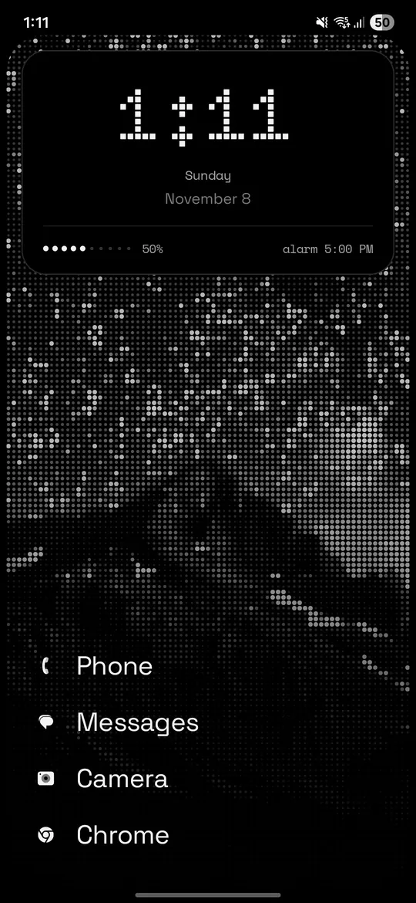

Nilo, an assistant that stays here
Two white eyes and a model that runs on this computer: no account, no cloud. It reaches as far as you let it, and asks before anything risky.
Chat
Answers, looks at this computer and opens apps.
Terminal and repository
A repository of yours, git and the terminal, every change shown first.
The whole system
The desktop as you use it: windows, typing, music, volume, the phone.

Devices, as decks
NIHIL for Android opens this computer's apps, plays its music and is its trackpad, over the network or, with none in common, Bluetooth; Vector carries files either way. The watch turns the music and the volume on its bezel.



Install
Each machine keeps its own in /etc/nixos; NIHIL comes from here, and updates never touch what's yours.
With the installer
The ISO is in Releases. Boot it from a USB stick: a few questions, and it makes room next to Windows or takes the whole disk.
ReleasesOn a NixOS you already have
Clone it, give the machine its flake and rebuild. One command keeps it current.
nihil update # the latest NIHIL, then rebuild
nihil rebuild # your changes to /etc/nixosMade of greys
Greys for hierarchy, dots for display, red only to interrupt. One file of tokens dresses GTK, the terminal, the compositor, the lock screen and the shell.
- Void
#000000 - Surface
#0E0E0E - Raised
#1A1A1A - Line
#2A2A2A - Off
#333333 - Muted
#7A7A7A - Dim
#A3A3A3 - Ink
#F2F2F2 - Signal
#D71921